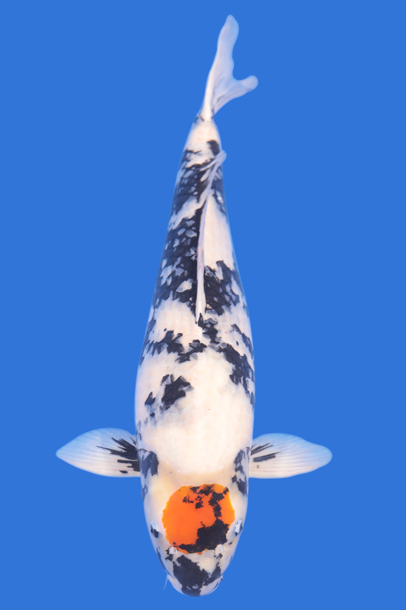

Tên đầy đủ: Cá Koi Tancho
Phân loại: Koi Tancho – Kohaku, Koi Tancho – Sanke, Koi Tancho – Showa
Nguồn gốc: Thuần chủng tại Nhật Bản
Phương thức sinh sản: đẻ trứng
Thức ăn: bèo phấn, tảo biển, thức ăn chế biến cho cá Koi
Điểm đặc biệt của em Koi Tancho có được chính là chấm tròn màu đỏ nằm chính giữa trung tâm phần đầu. Điểm thú vị nhất là tất cả các cá thể Koi tancho đều có màu đỏ ở phần đầu bất kể hình dạng vuông, hình thoi, bầu dục, tim, chéo, hoa… cũng được thừa nhận là Koi Tancho. Tuy nhiên Koi Tancho có chấm đỏ hình tròn là hoàn hảo nhất, là thước đo chuẩn mực của dòng TanCho.
Là loài cá được các bậc quan chức nhân sĩ ưa chuộng và được mệnh danh là loài cá chép có “cốt cách nhà quan”. Mình cá màu trắng tuyết rất đẹp, đầu cá có màu đỏ nổi bật, giống biểu tượng của cờ nước Nhật – tượng trưng cho đất nước mặt trời đỏ, cho nước nhà nên quan chức rất thích chọn lựa nuôi dưỡng. Theo phong thủy, nó có tác dụng vun đắp tạo dựng cho sự nghiệp của gia chủ thêm hưng vượng, quan vận hanh thông, thăng quan phát tài, củng cố địa vị và quyền lực.
Hachi trên đỉnh đầu các em Koi TanCho là biểu tượng cho hướng đông – hướng mặt trời mọc, đây là hướng tốt trong phong thủy. Có ý nghĩa khởi phát những điều mới mẻ, điểm lành, sự vươn lên mạnh mẽ trong khó khăn thuận theo ý trời.
Người dân Nhật lấy các em Koi Tancho biểu thị cho “Quốc kì sống” thể hiện lòng yêu nước của mình.
Lịch sử các em Koi Tancho gắn liền với truyền thuyết loài sếu nước trắng như tuyết với mào đỏ như máu linh thiêng của Nhật Bản. Cái tên Tancho ban đầu là tên của loài sếu này, truyền thuyết kể rằng những con chim này sống trong 1 ngàn năm, là biểu tượng cho sự trường thọ, may mắn của người Nhật.
Trong hàng ngàn năm lịch sử Nhật Bản, Koi Tancho là niềm tự hào lớn của người dân Nhật Bản. Là biểu tượng của quốc gia bất khả xâm phạm, là niềm tự hào đất nước Nhật Bản mang đi giới thiệu, tham dự các cuộc thi Koi lớn tại Châu Á và thế giới. Nhận thức được điều này nên các nhà lai tạo thuần chủng Nhật Bản rất tôn trong các em Koi Tancho, không xâm phạm, không giải phẫu, không làm biến thể những vẻ đẹp thuần chủng của nó.
1. Em Koi Tancho Kohaku
Là “Quốc kì sống” của Nhật Bản, thân mình, phần bụng, vây trắng muốt như tuyết, tô điểm 1 chấm đỏ lớn trên đầu nổi bật. Hình dáng và Hachi đỏ trên đầu càng cân xứng giá trị thẩm mĩ của em ấy càng cao. Những em Koi Tancho đẹp cấu trúc body nở nang, hachi dầy, nền màu thân dầy… luôn được nhiều người săn lùng và ao ước sở hữu.
2. Em Koi Tancho – Sanke
Em Koi Tan Cho – Sanke có Hachi đỏ trên đầu khá hoàn hảo như dòng Tancho – Kohaku, nền da cá chủ đạo là màu trắng muốt của tuyết, tuy nhiên đã xuất hiện những chấm sumi nhỏ trên nền trắng ở lưng cá. Đặc biệt phần đầu của Tan cho Sanke không có hoặc chỉ có chấm đen (sumi) rất nhỏ chờm lên chấm đỏ (hi).
3. Em Koi Tancho – Showa
Sumi của Tancho Showa giống y như em koi Showa Sankoku chỉ khác ở hachi trên đầu. Tancho Showa phần đầu, lưng đều xuất hiện bệt đen lớn, màu trắng ít hơn. Riêng phần đầu của Tancho showa lúc nào cũng xuất hiện sumi (chấm đen) chờm lên chấm đỏ (hi). Koi Tancho Showa phần đen nhiều hơn phần trắng, em Tancho Sanke và Tancho Kohaku thì lại có vây màu trắng.
